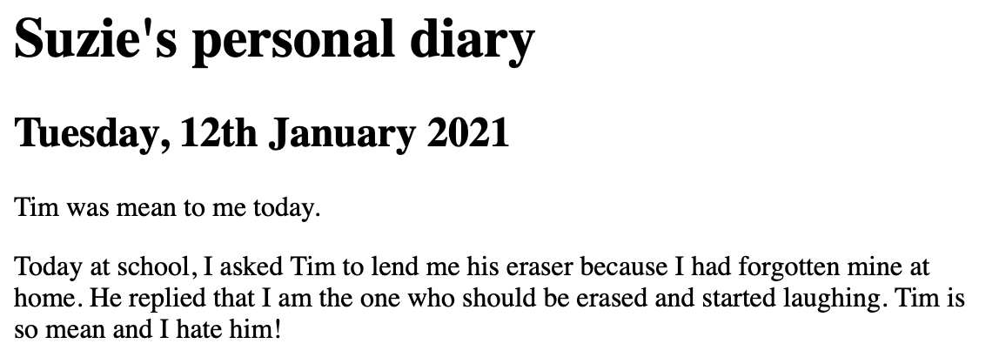

Introduction to selectors
Document in construction
This document introduces the notion of a selector, with a focus on its implementation in the language of Cascading Style Sheets (CSS). This document does not provide a comprehensive introduction to CSS (for one, please refer to w3schools, for example).
Selectors are found in every CSS document. Therefore, every student of CSS should learn about them. I wrote this document for people who are already familiar with the Hypertext Markup Language (HTML), but are only beginning to learn CSS.
A selector is a sequence of characters that define a search pattern. The selector can be used to select elements of a document that match the search pattern. Selectors of various level of complexity exist in CSS. This document only covers some simple CSS selectors:
- the universal selector,
- type selectors,
- attribute selectors,
- class selectors,
- ID selectors.
I will introduce the previous selectors by considering how they may be used to improve the layout of a sample HTML page. Suppose that someone called Suzie has written a page of her personal diary using HTML. In the body of the page, she wrote:
<h1>Suzie's personal diary</h1>
<h2>Tuesday, 12th January 2021</h2>
<p class="entry introductory">
<span title="A mean boy.">Tim</span> was mean to me today.
</p>
<p class="entry body">
Today at school, I asked Tim to lend me his eraser because I had forgotten mine at home. He replied that I am the one who should be erased and started laughing. Tim is so mean and <span id="angry">I hate him</span>!
</p>
This code makes her diary look like this:

Suzie is disappointed with the bland look of her page. She decides to use CSS to design the page. She creates a blank CSS file called style.css in the directory of the HTML page, and inserts the following code in the head of the page:
<link rel = "stylesheet"
type = "text/css"
href = "style.css" />
This code enables the use of the CSS file style.css to style the HTML page. Next, we will review how she can add the simple CSS selectors to style.css to design the page.
The universal selector
The universal selector * selects all elements. Like all selectors, the universal selector is found before a code block that defines a style.
Suzie would like all of her text to appear handwritten. She uses the universal selector to select all the text that she wrote. She inserts the following code into style.css:
* {
font-family: "Bradley Hand";
}
To be continued.